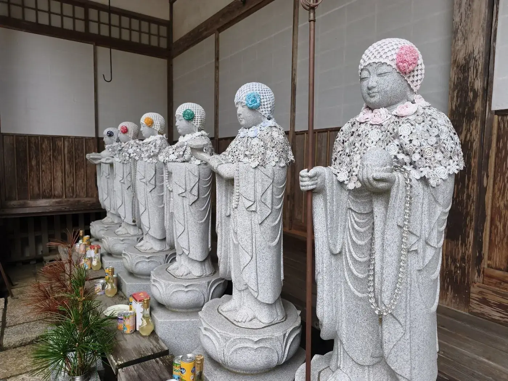
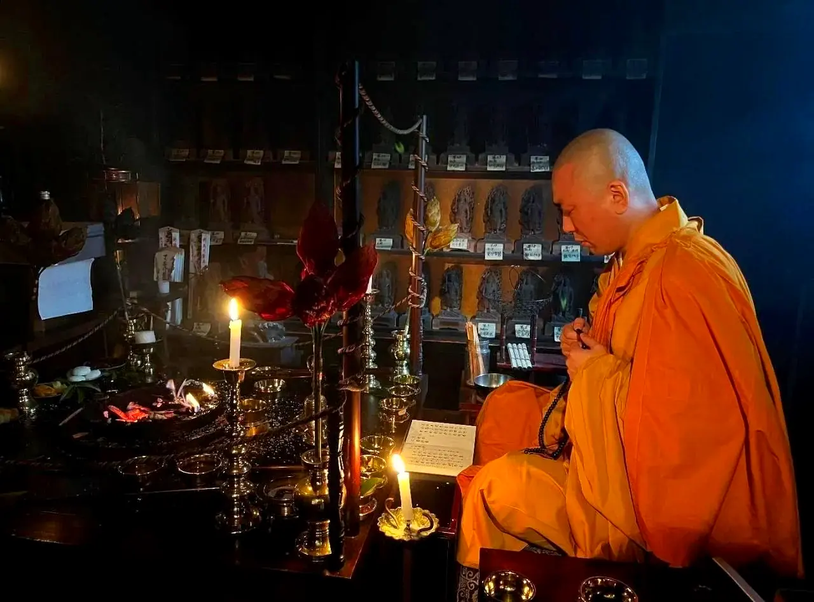

高野山 別格本山本覚院
Koyasan Hongakuin
Stay overnight in a temple founded in 1190 on sacred Mount Kōya.
高野山 別格本山本覚院
Stay overnight in a temple founded in 1190 on sacred Mount Kōya.


A night inside an 830-year-old temple at the heart of Kōyasan's UNESCO World Heritage precinct — quiet tatami rooms, a shōjin ryōri dinner, and a morning service led by the resident monks.
Every room looks onto a garden or courtyard. Rates vary by room and season, and every stay includes dinner and breakfast.
From ¥21,000 per person per night with dinner and breakfast (Hokusuikan room, 2 guests). Rates vary by room and date.

Tenpōrin, Hōkaigū and Kūtenbō — three distinctive rooms on the ground floor, each facing the garden. Tenpōrin and Hōkaigū include a private bath.
Check availability →
Japanese-style rooms in the main building, each with its own bath and toilet, overlooking the garden. Sleeps up to three.
Check availability →
Rooms in the new wing, with views of the garden through every season. Shared baths only; sleeps up to four.
Check availability →

Quiet, traditional tatami rooms on the first and second floors, unchanged over the years. Adjoining rooms available for groups.
Check availability →
Open to all guests, led by the vice head priest and the monks in the main hall. Attendance is optional and lasts about 45 minutes.
Trace the words of the Heart Sutra, character by character. Paper, brush and ink are all provided — just ask.
Buddhist vegetarian cuisine handed down by Kōbō Daishi, prepared from seasonal, local ingredients according to tradition.

Five gardens, including a rock garden by the celebrated Shōwa-era landscape designer — a world of moss and stone.

Hongakuin is a special head temple (bekkaku honzan) of Kōyasan Shingon Buddhism, founded in the Kenkyū era of 1190.
Its halls hold Edo-period ceiling paintings, screens by Kanō-school artists, and gardens designed by Shigemori Mirei.
In 1980, His Holiness the 14th Dalai Lama stayed here.

Inaba Hōken — Head Priest
At nine years old, he lay unconscious with peritonitis. His father prayed to Kōbō Daishi: “I will give my son to Mount Kōya — please save his life.” The next day, the boy recovered. At fifteen he entered Mount Kōya, and has served the Buddha ever since.
He studied shōmyō — the Buddhist chant of Kōyasan’s Nanzanshin school — under the former Chief Abbot of Kōyasan Shingon Buddhism, and for eight years trained some 640 young monks in its chanting. His recordings were released by Victor Entertainment; a special two-disc edition is available only at Hongakuin.
“More than half a century has passed since I began serving the Buddha and Kōbō Daishi. Even now, I ask myself every day: Am I worthy as a priest?”
Koga Hōken — Vice Head Priest
Welcomes guests to the morning service in the main hall, which anyone may attend.
A Buddhist nun also serves at Hongakuin. Women travelers, including those traveling alone, are warmly welcome.
Koyasan Hongakuin, 618 Koyasan, Koya-cho, Ito-gun, Wakayama 648-0211, Japan.
Solo travelers are welcome. However, if no other guests are staying on a given night, we may be unable to accept a single guest. Please check availability by phone.
Stays can be booked online at any time via the "Book your stay" button on this page. You can also reserve by phone (+81-736-56-2711, 9:00 am–5:00 pm JST).
Check-in is from 3:00 pm, and check-out is by 10:00 am.
Yes, the gate closes at 10:00 pm. The mountain grows quiet in the evening, so please return by then.
We serve shōjin ryōri, including dishes such as kōya-dōfu (freeze-dried tofu) and goma-dōfu (sesame tofu). We are unable to accommodate individual food allergies.
All guests are welcome to join. Attendance is optional, not required. It lasts roughly 45 minutes to an hour.
Yes, guests from overseas are warmly welcome. Our staff can assist you in simple English.
Our staff can assist you in simple English.
Book your stay online, or call us directly for prayer requests and memorial services.
+81-736-56-2711Office hours 9:00 am – 5:00 pm JST